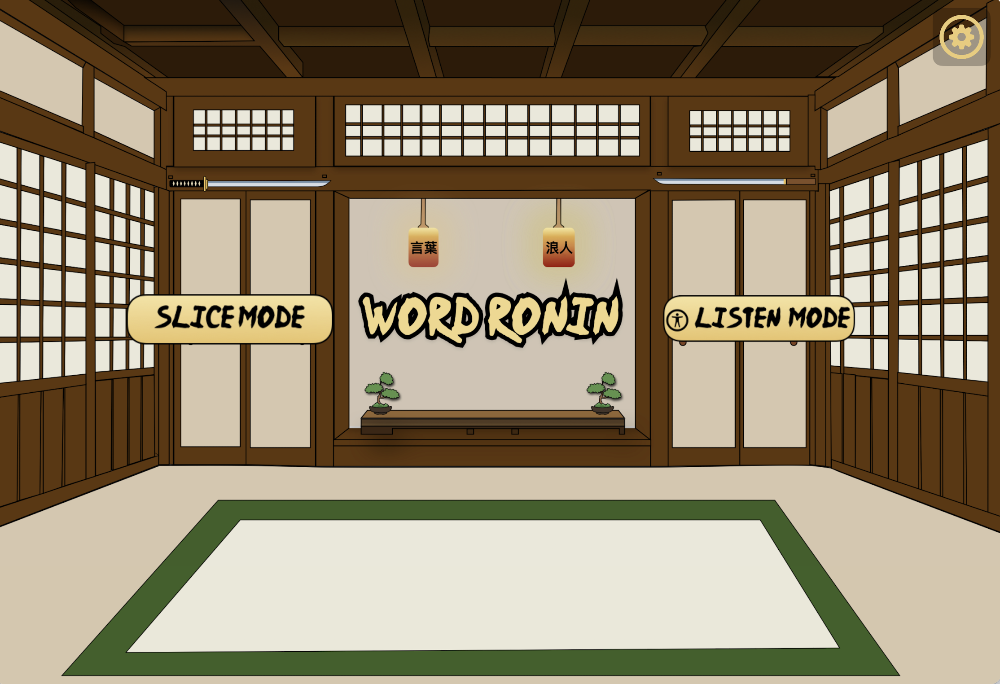
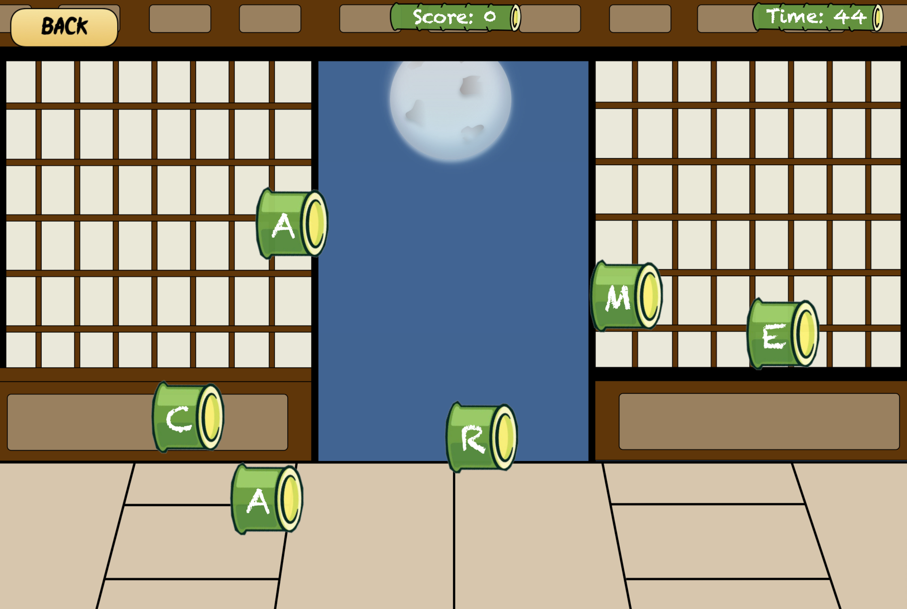

← Back
WordRonin
A fast paced iPad word game where players swipe across letters to form words before time runs out. The game includes both a visual Slice Mode and a Listen Mode designed to support players with visual impairments through audio driven interaction.
Gameplay Screens



How I Built It
WordRonin was built using SpriteKit for gameplay and Swift for overall structure. We iterated heavily on pacing, scoring, and interaction design to make the experience feel fast but not overwhelming. Building Listen Mode pushed us to rethink interaction entirely and design a game that works beyond visuals.